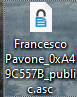
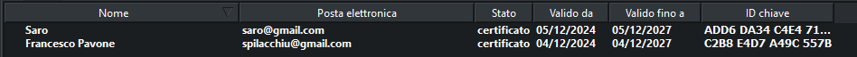
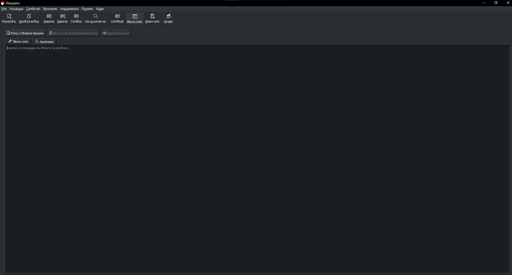
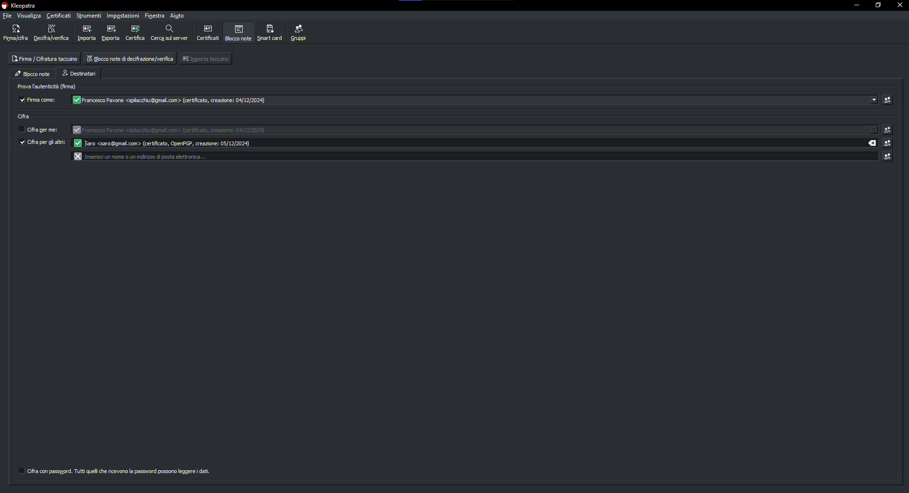
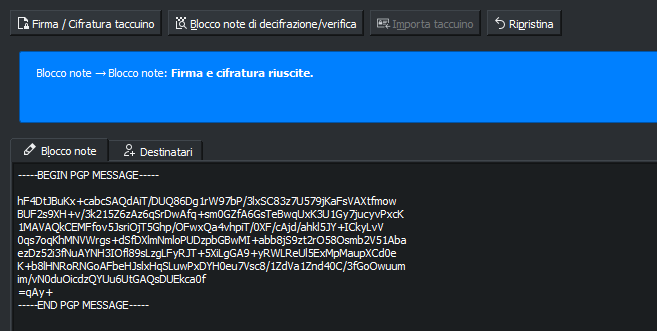
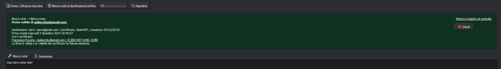

Dopo aver generato la coppia di chiavi, saremo reindirizzati a questa schermata. Come possiamo vedere è riportata la lista dei nostri certificati.
Se guardiamo attentamente il certificato che abbiamo appena creato vedremo il nome, l'email, lo stato della certificazione, la data di validità e l'ID del certificato.
E' necessario esportare le chiavi per poi dare la chiave pubblica al mittente, ma serve anche per crearne un backup nel caso si disinstalli il software o si perdano i dati, visto che i certificati sono archiviati localmente . Per effettuare il backup dovremo selezionare il certificato
e cliccare su File --> Esporta per fare il backup della chiave pubblica e File --> Copia di sicurezza delle chiavi segrete per eseguire il backup della chiave privata.

Naturalmente avremo bisogno di qualcuno con cui scambiare messaggi, perciò, seguendo il procedimento del 2° step, creiamo un nuovo certificato con nome Saro e posta elettronica saro@gmail.com. Questo sarà il risultato

Adesso esportiamo le chiavi pubbliche e private di Saro.
Dopo aver esportato le chiavi di Saro, clicchiamo su Blocco note nella toolbar sulla parte superiore dello schermo.

Scriviamo dunque un messaggio, ad esempio "Ciao Saro come stai?", e clicchiamo su Destinatari. Scegliamo quindi Francesco Pavone per firmare, togliamo la spunta su cifra per me e selezioniamo Saro come destinatario.

Il risultato sarà simile al seguente. Salviamo quindi il messaggio cifrato in un documento .txt

Dato che entrambi i certificati sono salvati sul nostro pc possiamo direttamente cliccare su "Blocco note di decifrazione/verifica", e ci sarà mostrato il messaggio in chiaro e la conferma che siamo stati noi a scrivere il messaggio

Nel caso volessimo invece, mandarlo al nostro destinatario, che ovviamente opererà su un altro computer, dovremo innanzitutto scambiarci le chiavi pubbliche. Dopodiché il mittente dovrà scrivere e cifrare il messaggio con la nostra chiave pubblica
e poi mandarci, tramite email o messaggio, il testo cifrato. Per decifrarlo dovremo seguire gli stessi passaggi della decifratura effettuati nello step precedente
.png)
.png)
.png)
.png)